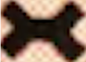
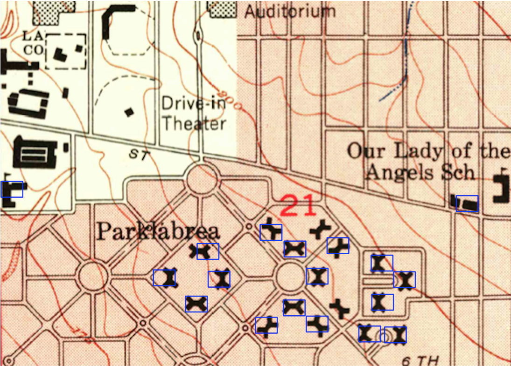
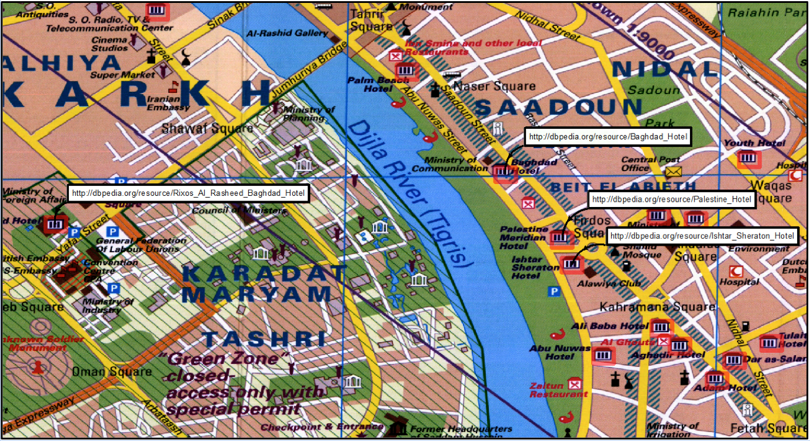
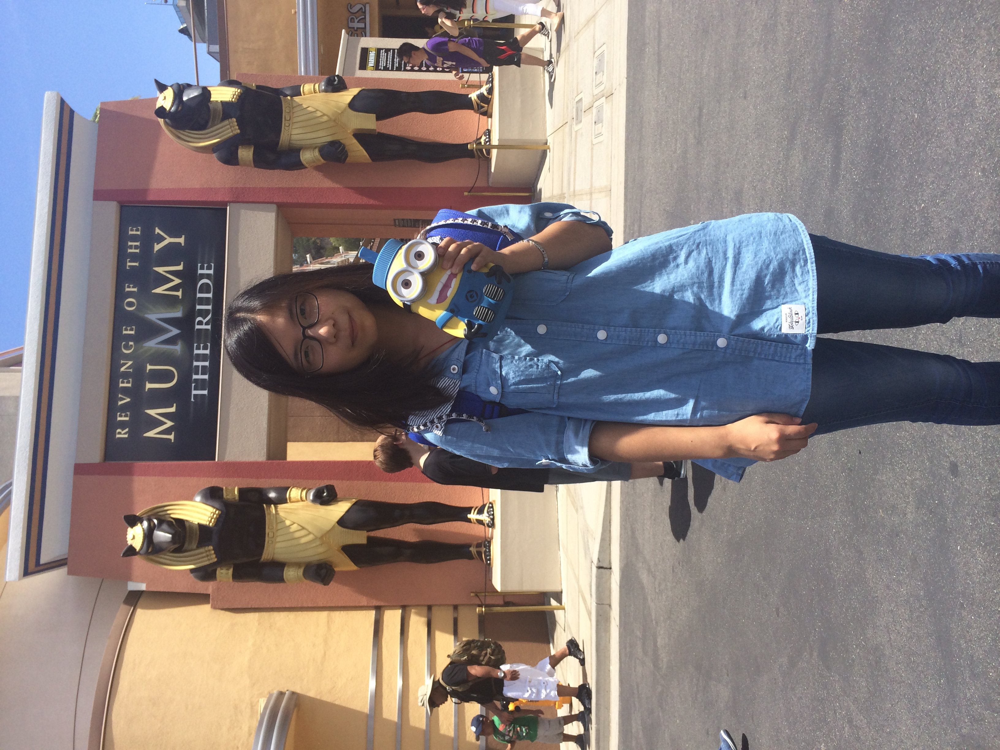

Spatial Computing
Spatial Sciences Institute, University of Southern California
who we are
projects
Geospatial Data Integration
Text Recognition in Maps
Road Vectorization from Maps
Symbol Recognition in Maps
Linking Maps
people
publications
join us

WHO WE ARE
We are a research team at Spatial Sciences Institute, University of Southern California. We develop computer algorithms and build applications to solve real world problems in spatial sciences.PROJECTS
Geospatial Data Integration [under construction]
Modeling and visualizing geospatial data: Karma

Efficient cleaning and transformation of geospatial data attributes: ArcKarma (an Esri ArcGIS plugin)

Text Recognition in Maps [under construction]
Overall approach:

Generating geonames from map images: ArcStrabo (an Esri ArcGIS plugin)

Generating named road vector data from map images (sample results)


Road Vectorization from Maps [under construction]
Overall approach:

Sample results:


Symbol Recognition in Maps [Repository]
Overall approach:
1. Take a scanned map...(here shows an USGS historical topographic map)

and a symbol example
2. Automatically identify map symbols that look like the symbol example (the blue boxes)
 Linking Maps to Other Spatial Datasets [under construction]
Overall approach:
1. Take a scanned map...
2. Automatically identify hotel symbols and link the symbol locations to DBpedia
3. Linked locations in a GIS

PEOPLE (listed alphabetically)
current

Yao-Yi Chiang
Assistant Professor (Research), USC Spatial Sciences Institute

Renuka
Fernandes
Undergraduate Student, USC Electrical Engineering

Yang Meng
Graduate Student, USC Data Science

Sima
Moghaddam
Graduate Student, USC Computer Science

Narges Honarvar Nazari
Graduate Student, USC Computer Science

Woojin Park
Visiting Scholar, USC Spatial Sciences Institute

Zebao Zhang
Visiting Scholar, USC Spatial Sciences Institute
affiliate faculty

Craig Knoblock
Director of Information Integration, USC Information Sciences Institute
Director of Information Integration, USC Information Sciences Institute
Research
Professor, USC Computer Science
alumni
2014

Akshay Anand
Graduate Student, USC Computer Science

Ramtin Boustani
Graduate Student, USC Computer Science
Sanjauli
Gupta
Graduate Student, USC Computer Science
2013

Ketan
Akade
Yahoo

Parin Jogani
Ebay
Shrikanth Narayanan
Graduate Student, USC Data Science
Ashish Shirode
Intel

Jizhe Zhou
Undergraduate Student, Electronics and Information Engineering, Beihang University (Beijing, China)
PUBLICATION
Journal Articles Peer-Reviewed Conference/Workshop ArticlesJOIN US
Hacking the SPACE!
We are always looking for students and summer interns to work on interesting problems in spatial science and computer science. Please feel free to send us an email if you are interested to join the team.USC Graduate Students
Credit or non-credit, we simply ask you to put down at least 10 hours a week so that you will have enough time to finish a cool project. You can also take the geospatial data integration course from CS department to learn more about our research.USC Undergraduate Students
We love to work with undergraduate students. Join us and gain experience in research and build some awesome applications!Visitors and Students from Other Schools (including international scholars and students)
We welcome visitors and students from other schools. We had great experience with international summer interns in the past. Come work with us in Los Angeles and enjoy the nice weather!Potential Research Topics
Exploiting online data sources to build accurate gazetteers from map scansWe are building automatic techniques to convert text labels in scanned maps into machine-readable text. Our current system utilizes Tesseract for the task of optical character recognition (OCR), and the results could contain missing or incorrectly recognized characters. We are investigating scalable, accurate methods to improve the character recognition results using existing geographic names. The idea is to automatically compare the recognition results with existing geographic names and find the best match efficiently. These geographic names can come from public online sources such as OpenStreetMaps and DBPedia.
Type of position: directed research
Requirement: excellent programming skills in C#, familiarity with fuzzy string comparison algorithms, familiarity with Elasticsearch and/or image processing is a plus.
Building an accurate character recognition system
Optical character recognition (OCR) software such as the open source Tesseract uses a combination of techniques in machine learning, pattern recognition, and image processing. We are using Tesseract to convert text labels in hundreds of historical map scans into machine-readable text. We are investigating the best practice to train the underlying algorithms of Tesseract for efficiently recognizing specific font types and document layout.
Type of position: directed research
Requirement: excellent programming skills in C#, familiarity with image processing, familiarity with pattern recognition and/or machine learning is a big plus.
Symbol recognition from map scans
We are investigating methods to automatically extract locations of cartographic symbols from map images.
Type of position: directed research
Requirement: excellent programming skills in C#, familiarity with image processing, familiarity with pattern recognition and/or machine learning is a big plus.
Image segmentation
Grouping similar colors in an image is very often the first step for object recognition from images. Existing image methods applied on document images do not always result in a clear representation of text in images. We are investigating efficient and effective methods that utilize both color and spatial distances between pixels to separate text from other object in a document image.
Type of position: directed research
Requirement: excellent programming skills in C#, familiarity with image processing and machine learning, familiarity with computer vision is a big plus.